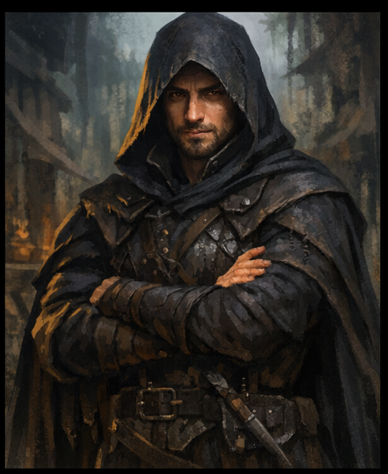

Kael Vorn

Kael Vorn je členem starého rodu spojeného s městem Vivecus. Je známý svou opatrností a schopností pohybovat se mezi různými skupinami lidí bez toho, aby na sebe zbytečně upozorňoval.
Na rozdíl od mnoha jiných šlechticů se Kael nezajímá o otevřenou moc. Spíše se zaměřuje na informace, pozorování a pochopení věcí, které ostatní přehlížejí.
Někteří lidé ho považují za diplomata, jiní za tajemného pozorovatele. Pravda je pravděpodobně někde mezi tím.